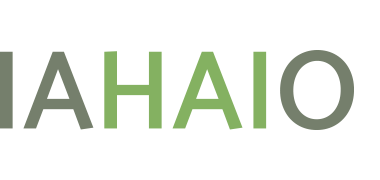

Apie mus
Kaniterapijos asociacija įkurta 2013 metais. Pirmasis kaniterapijos pagrindų seminaras įvyko 2010 m. rudenį Vilniuje – patirtimi dalijosi Latvijos kaniterapeutai.
- Tarptautinės žmogaus ir gyvūno ryšio organizacijų asociacijos narė
- Kaniterapijos asociacija yra Lietuvos kinologų draugijos narė
- Asociacija laikosi Europos Sąjungos teisės normų

KAIP TAI VEIKIA
Kokie pagrindiniai žingsniai terapinio šuns link?
Terapinių šunų atveju, juos vertina 3 nepriklausomų specialistų komisija, kuri pagal tarptautinius standartus, kitų šalių ilgametę patirtį bei egzaminų nuostatus vertina šuns psichines bei kitas savybes ir, šuniui išlaikius specialų egzaminą, suteikia atitinkamą pažymėjimą bei jį įtraukia į Terapinių šunų registrą.
1. Šuns dresūra
Šunis terapijai gali ruošti specialistai turintys kvalifikacijos pažymėjimą arba sertifikatą.
2. Terapijos egzaminas
Terapinio šuns egzaminą gali laikyti tik suaugę, fiziškai ir emociškai subrendę gyvūnai – ne jaunesni kaip 14 mėnesių šunys.
3. Užsiėmimų organizavimas
Terapinis šuo per dieną gali dalyvauti ne daugiau kaip 3 užsiėmimuose, jo trukmė – ne ilgiau kaip 45 minutės.
PAGRINDINĖS SAVYBĖS
Kokios savybės reikalingos terapiniam šuniui?
Ar šuo gali dalyvauti susitikimuose, edukaciniuose bei terapiniuose užsiėmimuose, projekte „Skaitymas su šunimi“, sprendžia ne šeimininkas – šuns vedlys, o nešališka komisija.

Geras šuo - ar to pakanka?
Vaikų ugdymo, medicinos bei kitos įstaigos, kviesdamos bei leisdamos savo aplinkoje vykdyti edukacinę, terapinę ar kt. veiklą su šunimis, pirmiausia turi įsitikinti, kad užsiėmime su ugdytiniais arba pacientais dalyvaujantys šunys yra išlaikę egzaminus ir turi galiojančius pažymėjimus.
- Terapinių šunų atveju, juos vertina 3 nepriklausomų specialistų komisija, kuri pagal tarptautinius standartus, kitų šalių ilgametę patirtį bei egzaminų nuostatus vertina šuns psichines bei kitas savybes.
- Kaniterapijos asociacija yra IAHAIO narė, todėl savo veikloje bei atrinkdama ir ruošdama šunis, vadovaujasi visuotinai pripažintu „White paper“ reglamentu.
- Kaniterapijos asociacija visada iš anksto su įstaigos vadovas aptaria užsiėmimų pobūdį, tikslus, numato atsakingus asmenis. Yra pasirašomas abipusis sutikimas su įstaiga, informuojamas VMVT atitinkamas padalinys, pasirūpinama tėvų/globėjų sutikimais.
Kokios yra terapinio užsiėmimo taisyklės?
Pagal visuotinai priimtus kaniterapijos standartus bei gerąją patirtį, terapinio užsiėmimo metu laikomasi tam tikrų taisyklių.
- Terapinis užsiėmimas su šunimi trunka nuo 15 min. iki daugiausia 45 min. (tai priklauso nuo sutrikimo ar negalavimo pobūdžio).
- Terapinis šuo negali būti paliktas vienas su pacientu. Vedlys visada turi būti kartu su savo šunimi. Šuo turi būti saugiu atstumu nuo žmogaus, o ne prie pat žmogaus – šuns užimama pozicija priklauso nuo užsiėmimo pobūdžio ir turinio.
- Vedlys veda užsiėmimą tik su vienu, o ne su keliais šunimis iš karto, nepaisant, ar tai vaikų grupė, ar užsiėmimas vedamas tik su vienu asmeniu.

14
Terapinių šunų
100+
laimingų vaikų
10+
Vykdomų projektų
5+
Užsienio partnerių
KANITERAPIJOS SPECIALISTAI
SUSIPAŽINKITE SU KANITERAPIJOS SPECIALISTAIS
Kaniterapeutų mokymus baigę ir praktiką atlikę kaniterapijos specialistai


KANITERAPIJOS NAUDA
Gyvūnų asistuojamos ugdymo programos yra naudingos
Kaip apie terapinius šunis ir jų teikiamą naudą atsiliepia psichologai.
„Specialiai paruoštas šuo kartu su suaugusiuoju yra ypač geras derinys vaikui, kuris siekia patenkinti bendravimo poreikį ne vien su savo bendraamžiais ir kuriam nors retkarčiais reikia išsiveržti iš socialinio „narvo“.
Dauguma gabių vaikų turi netgi geresnę socialinę kompetenciją nei bendraamžiai, daugeliu atveju jie pasižymi puikiais socialiniais įgūdžiais, tačiau dėl spartesnės intelektinių gebėjimų raidos gali atsidurti ne tik intelektiniame, bet ir socialiniame „narve“.

Sigita Girdzijauskienė
- 
BENDRA INFORMACIJA
ARTĖJANTYS IR PRAĖJĘ RENGINIAI
Daugiau informacijos susisiekus el.paštu.
- Praėję
- Artėjantys
- 2020 ir 2021 metų Kaniterapijos asociacijos finansinė ir veiklos ataskaita
- Kaniterapijos asociacijos prezidento rinkimai
- Kaniterapijos asociacijos Valdybos rinkimai
- Kiti klausimai
- Egzamino komisija: pirmininkė Veslava Citovič-Rul, narė Daiva Kvedarienė
- Turėti šuns sveikatos pasą
- Šuo turi būti paženklintas mikročipu
- Šuo turi būti paskiepytas nuo užkrečiamųjų ligų
- Egzamino komisija: pirmininkė Veslava Citovič-Rul, narė Daiva Kvedarienė
- Turėti šuns sveikatos pasą
- Šuo turi būti paženklintas mikročipu
- Šuo turi būti paskiepytas nuo užkrečiamųjų ligų
JŪSŲ DUK
DAŽNIAUSIAI UŽDUODAMI KLAUSIMAI
Vedlio, planuojančio įtraukti šunį į terapinę veiklą, pareiga – taikyti tinkamą mokymų metodiką ir paisyti šuns gerovės reikalavimų.
Kas ruošia šunis terapinei veiklai?
Terapinis šuo ir darbo grafikas: kaip suderinti?
Ar terapiniai šunys ir šunys – neįgaliųjų pagalbininkai yra tie patys šunys?
Ar galima testo nelaikiusį, jauną šunį įtraukti į kaniterapiją?
Kokius mokymus baigia kaniterapijos asistentai?
Kokius mokymus baigia kaniterapeutai?
MUS GALITE SEKTI
Renginių informacija, nuotraukos, mūsų užsiėmimai ir kt.
MŪSŲ KONTAKTAI
SUSISIEKITE SU MUMIS
Jei kyla daugiau klausimų ar turite pasiūlymų, susisiekime!
Labas!
El. paštu
Telefonu
Atvykus
-
Vilnius
Visorių g. 8, LT-08300 Vilnius
-
Kaunas
Pienių g. 6-10, 47443 Kaunas
hello@coderthemes.com
+01 ( 1234 567 890 )